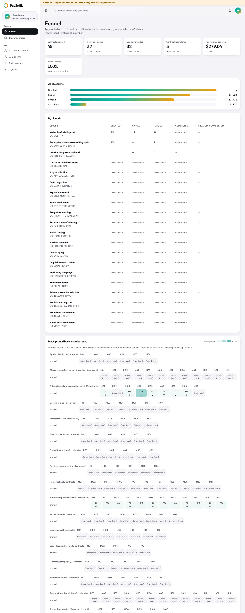
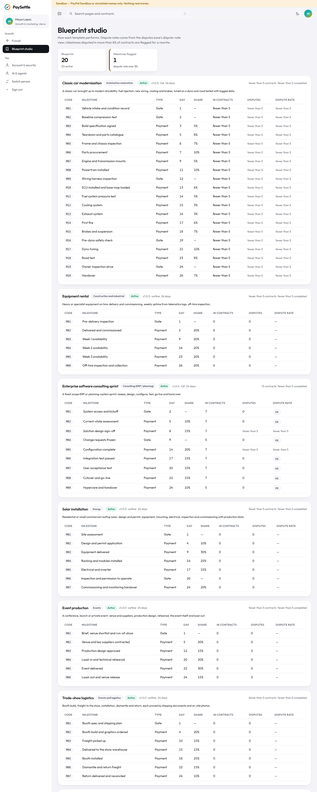

What this role does
Growth (demo: Maya Lopez) sees aggregated numbers only: no names or e-mails, and any group smaller than 5 shows “fewer than 5”.
Signing in
Open the demo, choose Try the live demo (or go to /login) and pick Maya Lopez under “Explore the live demo”. No password is needed in the sandbox. You land on /marketing.
Step by step
1. Read the funnel
Created → signed → funded → completed, overall and per blueprint.
- Open Funnel.
- Most-pruned baseline milestones shows which steps negotiations remove most often: candidates for rewording or making optional.

2. Improve blueprints in the studio
Blueprints define milestones, proof, criteria and clauses for each kind of work.
- Open Blueprint studio. Each blueprint shows its contracts, completions and, per milestone, type, day, share and dispute rate.
- Milestones disputed in more than 8% of contracts are flagged for a rewrite of their criteria or proof.
- Keep copy plain and specific; promises of outcomes are blocked by the copy lint (
tools/copy-lint.mjs).

What the money states mean
PaySettle never keeps the client's money in its own account. Each tranche (a block of milestones that fits inside one PayPal hold window) is an authorization on the client's PayPal account; each approved milestone is a partial capture from it.
| You see | Where the money is |
|---|---|
| Planned — not funded | Nowhere yet. The contract is signed and locked; the client has not approved the PayPal hold. |
| Waiting for PayPal approval | The order exists in PayPal; the client still has to approve it there. Nothing is reserved until they do. |
| Held in PayPal | Reserved on the client's PayPal account (an authorization). Not paid to anyone yet. |
| Partly released | Some milestones were approved and captured to the provider; the rest is still held. |
| Released | That milestone's amount was captured to the provider's PayPal account, minus the platform fee (2.5% per release in the demo). |
| Frozen: in dispute | Only the disputed milestone's amount is frozen; it stays held in PayPal while the dispute runs. Other milestones carry on. |
| Returned to client | Released back to the client: the unused part of the hold is voided, or a captured amount is refunded after a verdict. |
| Rolled over | The hold window was closing, so the unfinished remainder moved into a new tranche that the client funds again. |
| Settling / Closed | The hold window is ending: approved work is paid and unstarted milestones go back to the client. Closed means nothing is left on that tranche. |
| Paused for checks | Reconciliation found a difference between the contract, the ledger and PayPal. Releases on that tranche wait until Finance resolves it. |
Limits of this demo
- Sandbox only. Money is either PayPal Sandbox money or simulated by the mock rail (“Simulated PayPal (mock)”). Nothing real moves, and the yellow banner at the top of every app page says so.
- The mock rail keeps its records in memory. After a server restart, Finance's reconciliation may show older tranches as “no PayPal data”; the ledger is still checked against the contract.
- AI is advisory. The AI verifier, the mediation proposal and the drafting help only suggest. People approve, sign and decide; the rule-based checks run with or without AI. Without an AI key the panels say “AI unavailable”.
- Time can be simulated. The Judge Playground moves a session's virtual clock only; deadlines you see on seeded data use each contract's own clock.
- Demo people are shared. Everyone using the demo signs in as the same personas, and Playground scenarios add contracts to them, so lists grow over time.
- PaySettle is a hackathon build, not a licensed payment, escrow or legal service. Contract text and dispute outcomes are not legal advice.